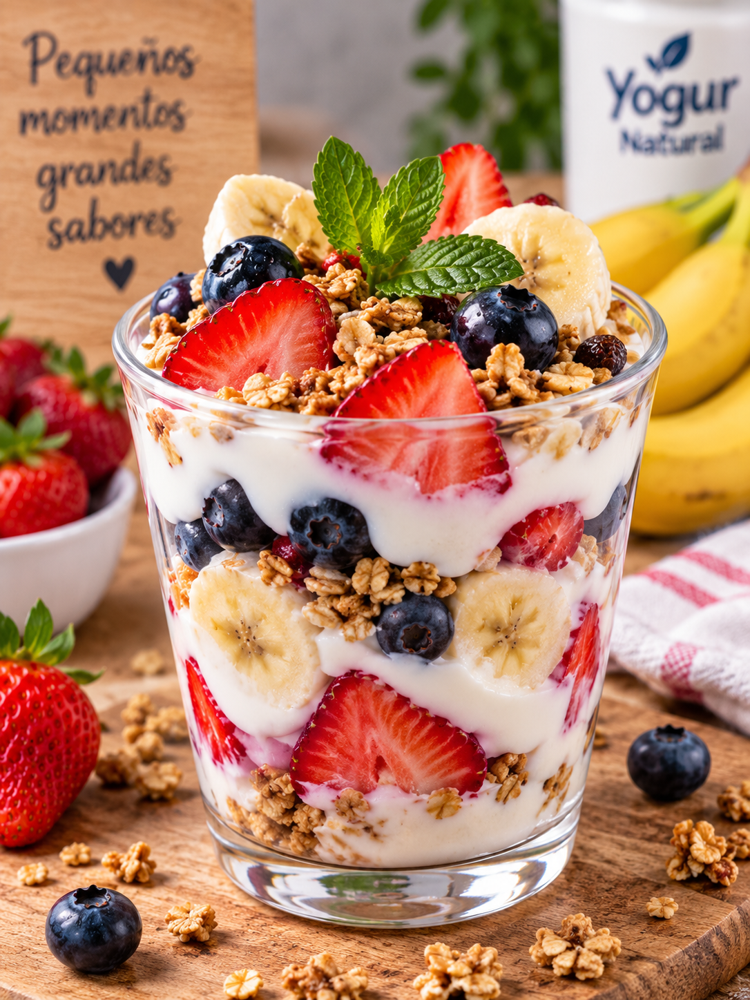
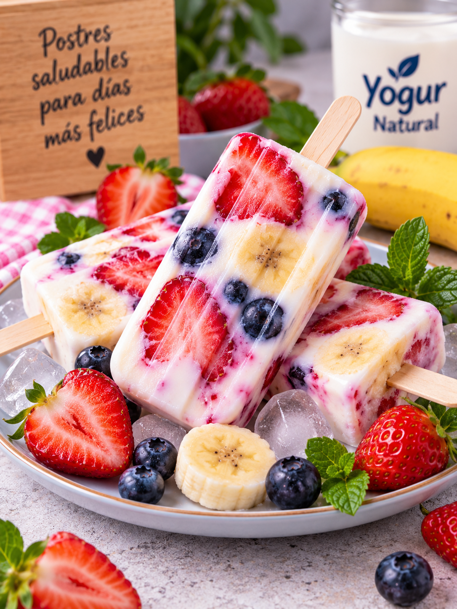
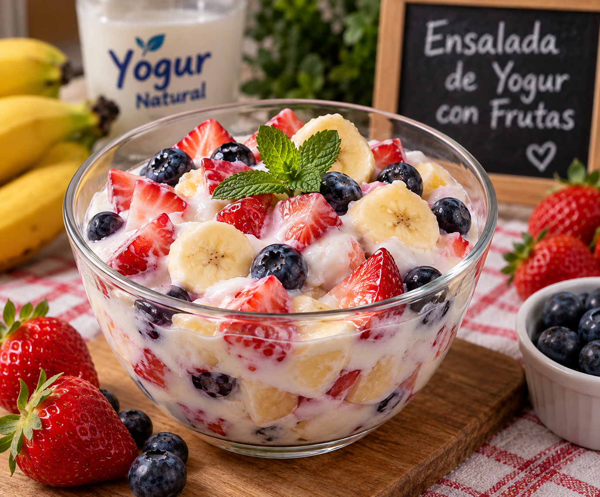
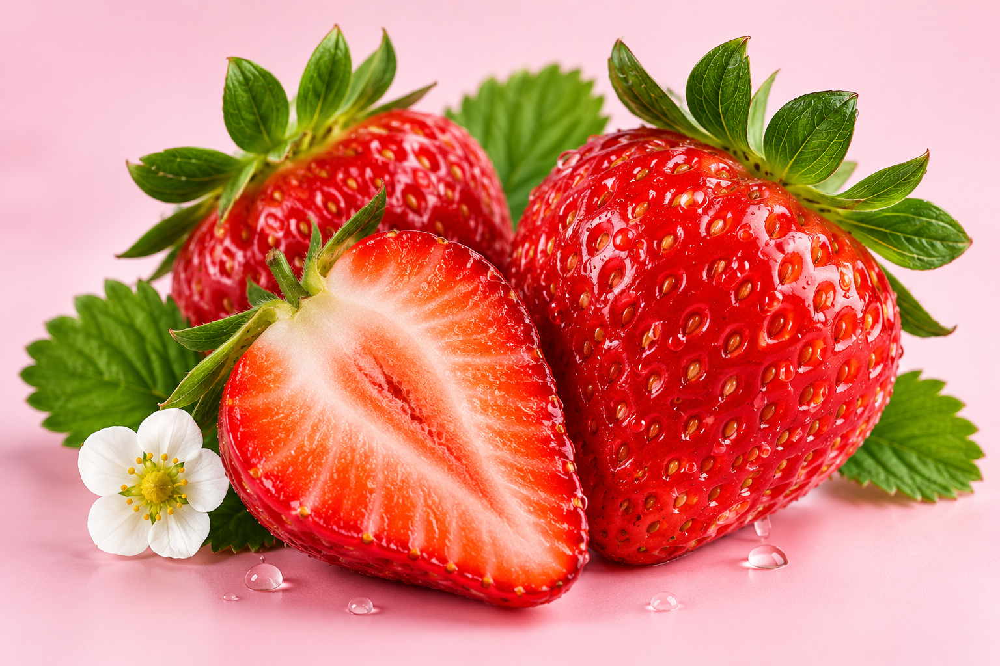
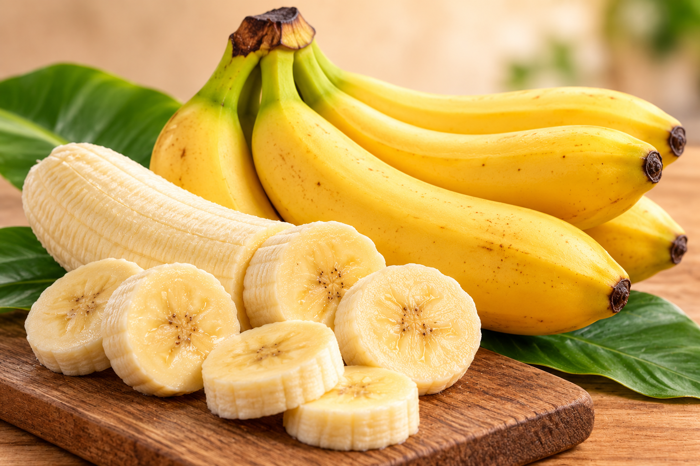
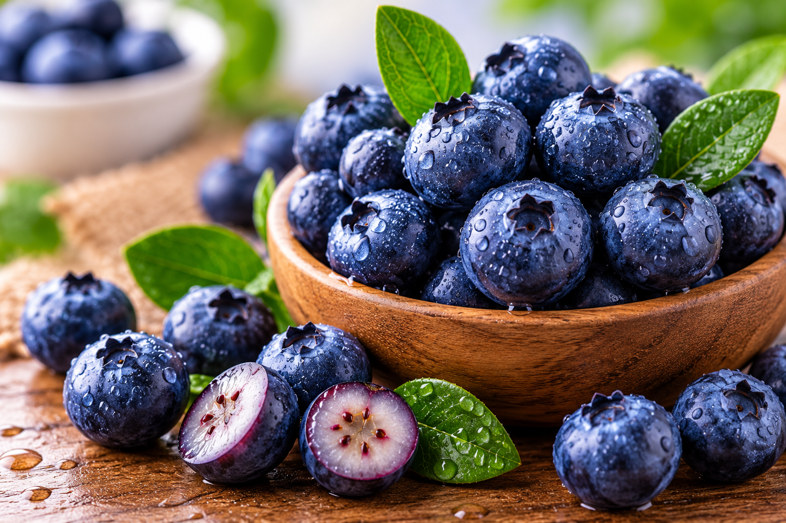
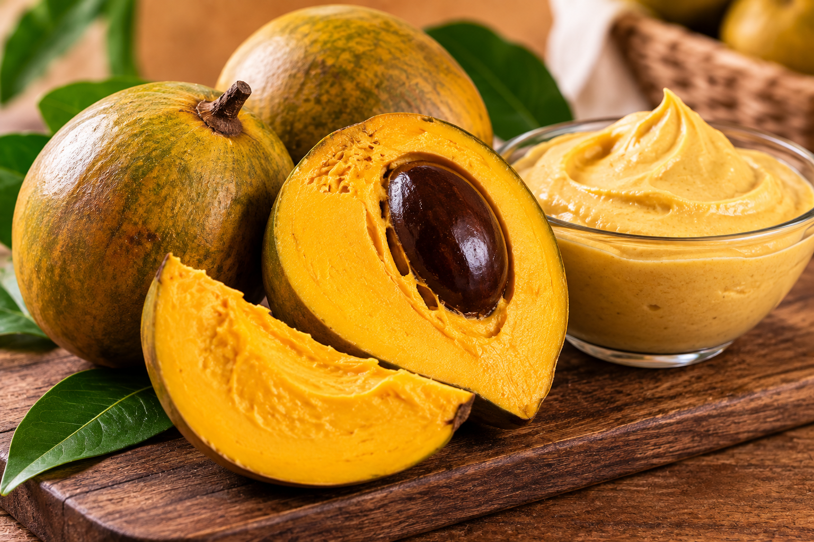
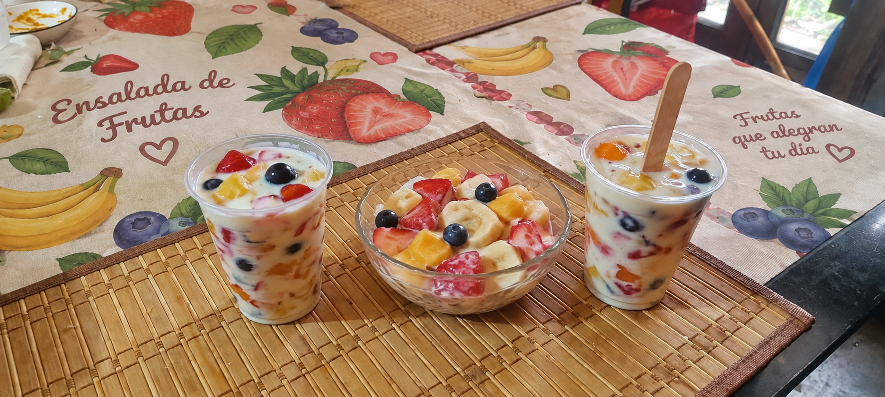
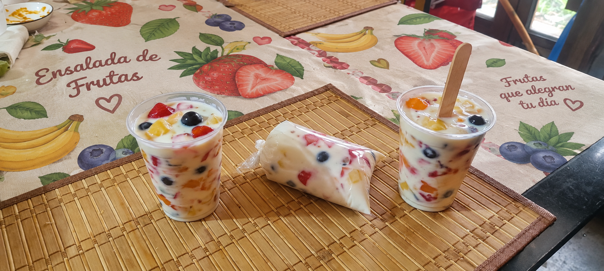

Vaso de Yogur con Frutas
Cremoso · Por capas · Personalizable
Dos productos. Dos combinaciones. Una misma propuesta.
Descubre nuestra propuesta de postres elaborados con yogur y frutas. El vaso combina fresa, plátano y arándano, mientras que las paletas combinan fresa, plátano y lúcuma.

Cremoso · Por capas · Personalizable

Cremosas · Frías · Refrescantes
Dos productos elaborados a base de yogur, cada uno con su propia combinación de sabores.

Una combinación de yogur natural con fresa, plátano y arándano, presentada en capas y acompañada opcionalmente de chía y granola.
Una presentación congelada elaborada a base de yogur con fresa, plátano y lúcuma, buscando una combinación de sabores dulces, suaves y cremosos.
Responde unas preguntas y descubre cuál de nuestros dos productos se adapta mejor a tus preferencias.
Cuatro sabores utilizados en diferentes combinaciones dentro de nuestros dos productos.

Su sabor frutal y su color rojo aportan una presentación atractiva.

Proporciona dulzor natural y contribuye a conseguir una textura cremosa.

Aporta contraste de sabor y un color característico al vaso de yogur.

Su sabor dulce y característico complementa la textura cremosa de las paletas de yogur.
Los ingredientes que dan forma a nuestras dos presentaciones.
Base cremosa utilizada en ambos productos. Aporta textura y consistencia.
Fresa, plátano, arándano y lúcuma se utilizan en diferentes combinaciones según el producto.
Ingrediente complementario que puede incorporarse principalmente al vaso de yogur.
Puede utilizarse como topping del vaso para proporcionar una textura crujiente.
Puede utilizarse en pequeñas cantidades si la preparación necesita mayor dulzor. No es obligatoria.
El origen de la idea detrás de nuestros dos postres.
Necesidad
Crear alternativas de postre que combinen sabor, fruta y una presentación atractiva.
Idea
Utilizar yogur como base para crear dos productos con diferentes combinaciones de sabores.
Propuesta
Combinar fresa, plátano y arándano en el vaso; y fresa, plátano y lúcuma en las paletas.
Resultado
Dos productos relacionados por su base de yogur y frutas, pero con sabores y presentaciones diferentes.
Ambos productos utilizan yogur y frutas como base del concepto. El vaso utiliza fresa, plátano y arándano, mientras que las paletas utilizan fresa, plátano y lúcuma.
🍓 🍌 🫐
🍓 🍌 🟡
Una comparación responsable y honesta.
⚠️ La composición final depende de las cantidades, ingredientes y porciones utilizadas. Esta comparación no busca afirmar que todos los postres tradicionales sean negativos.
Elige la combinación que más te llame la atención.
🍓 Fresa · 🍌 Plátano · 🫐 Arándano
¡Gracias por elegir! 🎉
🍓 Fresa · 🍌 Plátano · 🟡 Lúcuma
¡Gracias por elegir! 🎉
Los dos productos que conforman nuestro proyecto.

🍓 Fresa · 🍌 Plátano · 🫐 Arándano
Prototipo del Proyecto
🍓 Fresa · 🍌 Plátano · 🟡 Lúcuma
Prototipo del ProyectoEl equipo detrás de esta propuesta.
Integrante del equipo
Integrante del equipo
Integrante del equipo
Integrante del equipo
Integrante del equipo
Integrante del equipo
Una propuesta saludable, fresca y deliciosa
Escanea nuestro código QR y conoce nuestra propuesta.
CÓDIGO QR
DISPONIBLE AL
PUBLICAR LA PÁGINA
Proyecto Final 2026 · Postres de Yogur y Frutas